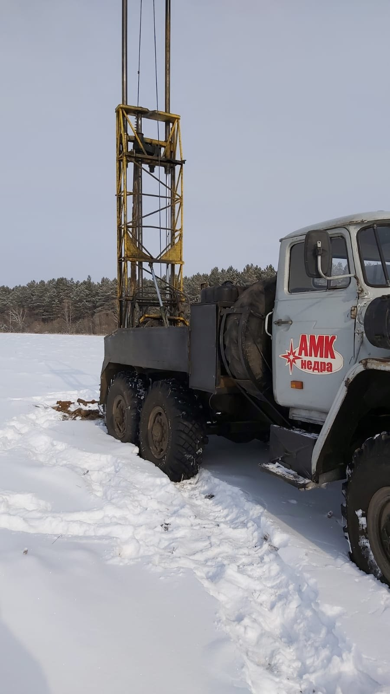
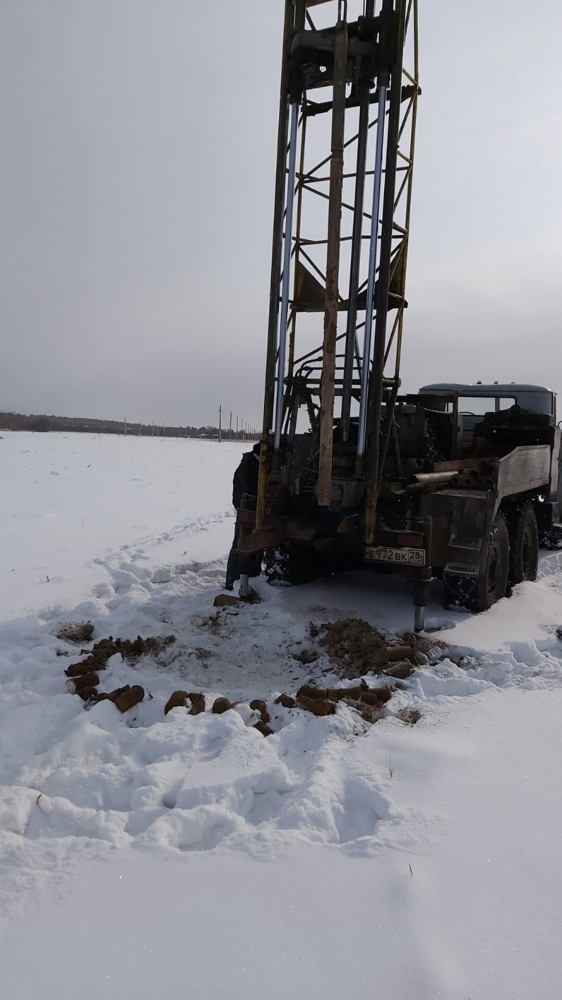
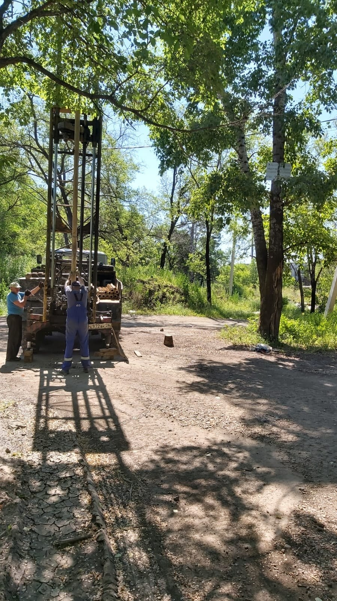
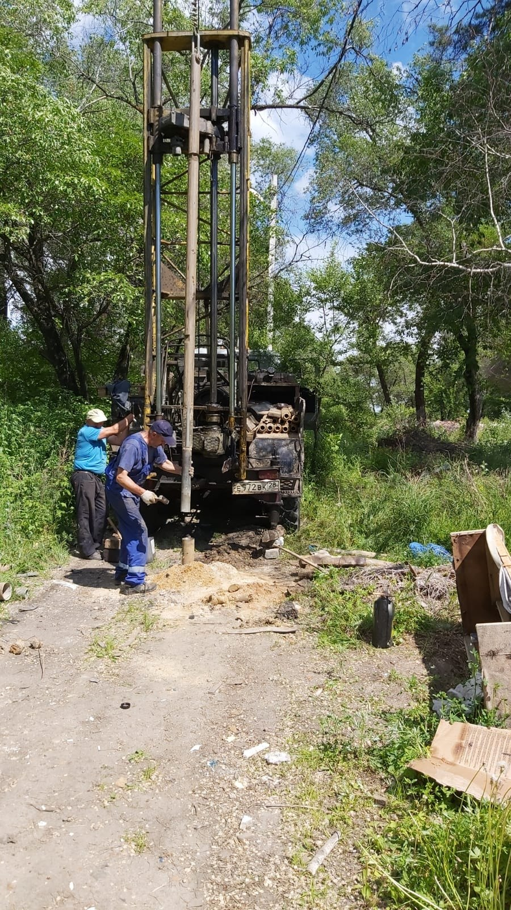
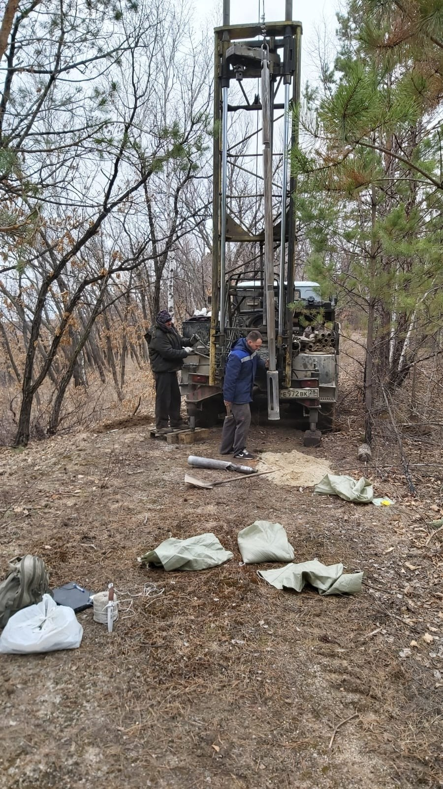

Инженерно-геологические изыскания
Геологические исследования для проектирования, строительства, реконструкции и обследования зданий и сооружений.
Подробнее →ООО «Амурская компания «Недра» выполняет геологические, геодезические, экологические, гидрометеорологические и геотехнические изыскания в Благовещенске и по всей Амурской области.
Полный цикл изыскательских работ для объектов любого назначения — от частных домов до линейных и промышленных объектов.
Геологические исследования для проектирования, строительства, реконструкции и обследования зданий и сооружений.
Подробнее →Оценка состояния окружающей среды и прогноз её изменений для безопасной реализации строительных проектов.
Подробнее →Топографические планы масштабов 1:5000–1:200, трассирование линейных объектов, разбивочные работы.
Подробнее →Изучение режима водных объектов, опасных гидрометеорологических процессов, русловых процессов и берегов.
Подробнее →Проходка горных выработок, полевые испытания грунтов, статическое, динамическое и буровое зондирование.
Подробнее →Цена и сроки определяются исходя из сложности объекта и объёма работ. Отправьте техническое задание — ответим с предварительным расчётом.
Отправить ТЗ →Изыскания выполняются в соответствии с нормативными документами.
Отвечаем за результаты геологических и других изыскательских работ, сопровождаем выданные материалы в период срока их действия.
Различные условия и оптимальные варианты сотрудничества для организаций и частных лиц.
Полевые работы выполняем собственным оборудованием и транспортом в любое время года.
Буровые работы на объектах Амурской области в любое время года.





Вы отправляете техническое задание или описание объекта на почту либо по телефону.
Оперативно уточняем стоимость и сроки, фиксируем их в договоре.
Выезжаем на объект и выполняем изыскания собственным буровым оборудованием.
Лабораторные исследования грунтов и подготовка отчётной документации.
Передаём технический отчёт, готовый для передачи в проектную документацию.
Сопровождаем выданные материалы в течение всего срока их действия.
Звоните специалистам Амурской компании «Недра» — они помогут решить ваши задачи в минимальные сроки.